UKRAINIAN ART
Illya Ripyn, Kazimir Malevich, Arkhip Kuindzhi, Johann Pinzel, Taras Shevchenko were prominent Ukrainian painters. Continuing the tradition are Ivan Marchuk, Anatoliy Kryvolap, Nikita Kadan and thousands more. Here are just a few artworks. And if you want to learn more, a great place to start is Ukrainian Section at Wikiart.
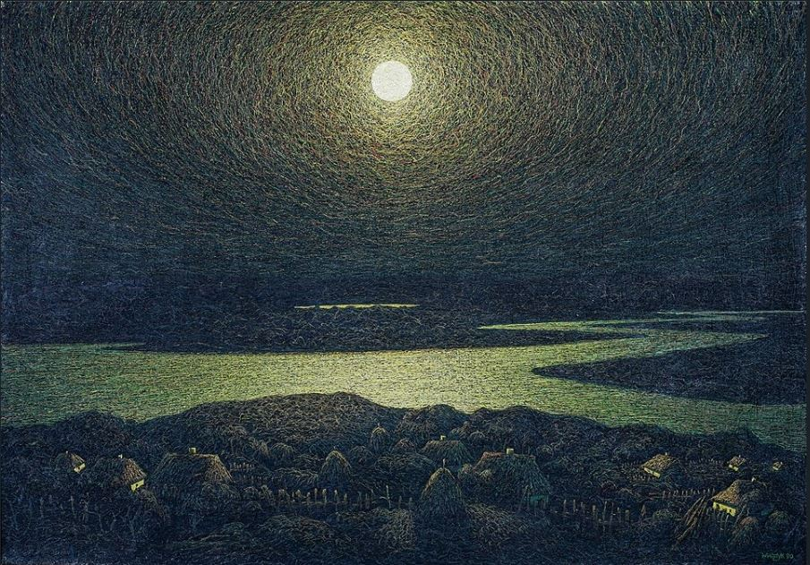
Ivan Marchuk 1981
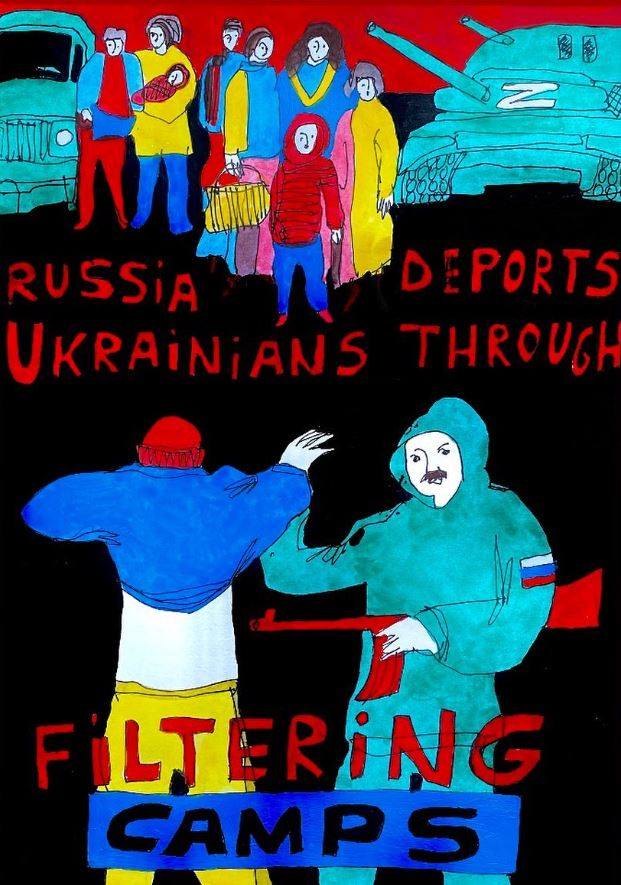
Anton Logov 2023
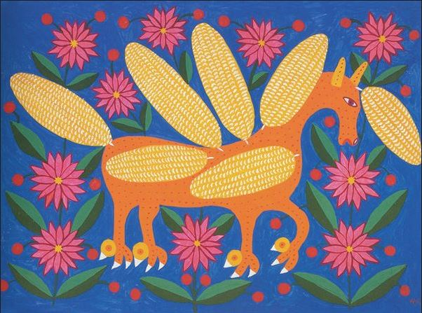
Maria Prymachenko 1978
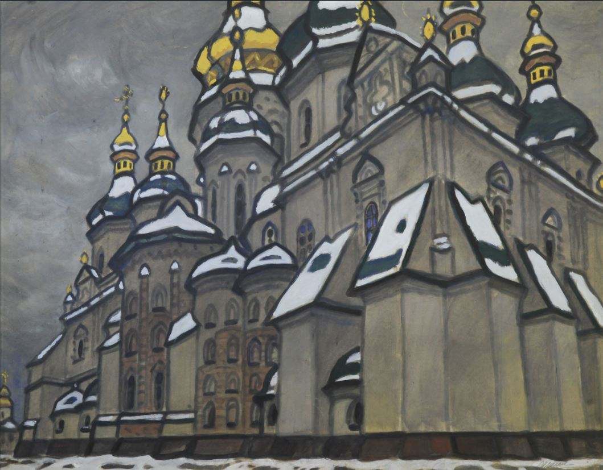
Yuriy Khimich 1992

Artem Proot 2022
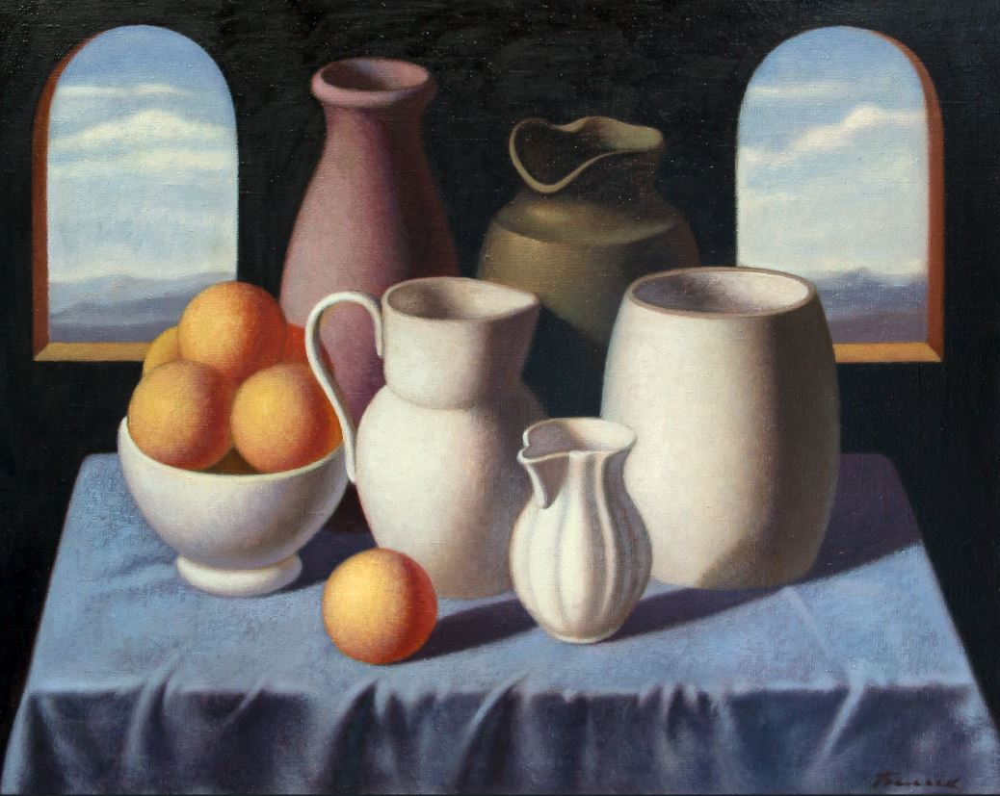
Sergey Belik 1974-2014
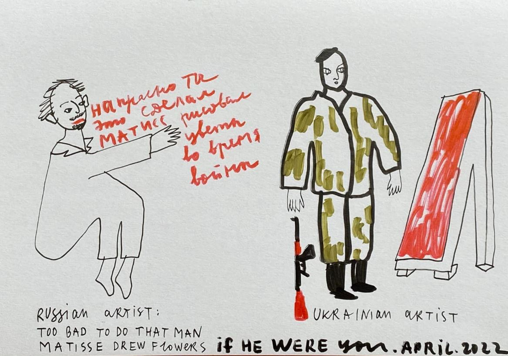
Alevtina Kakhidze 2022
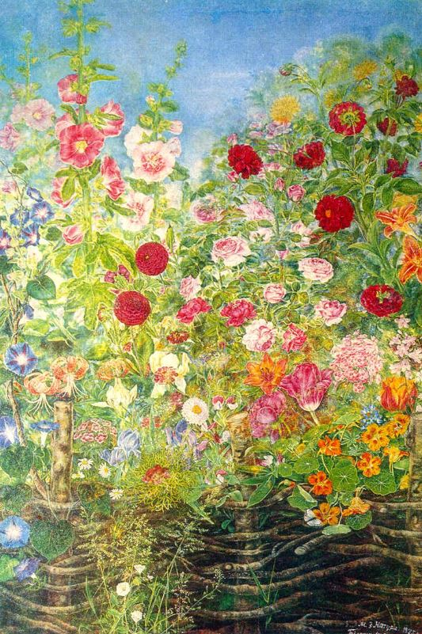
Kateryna Bilokur 1935
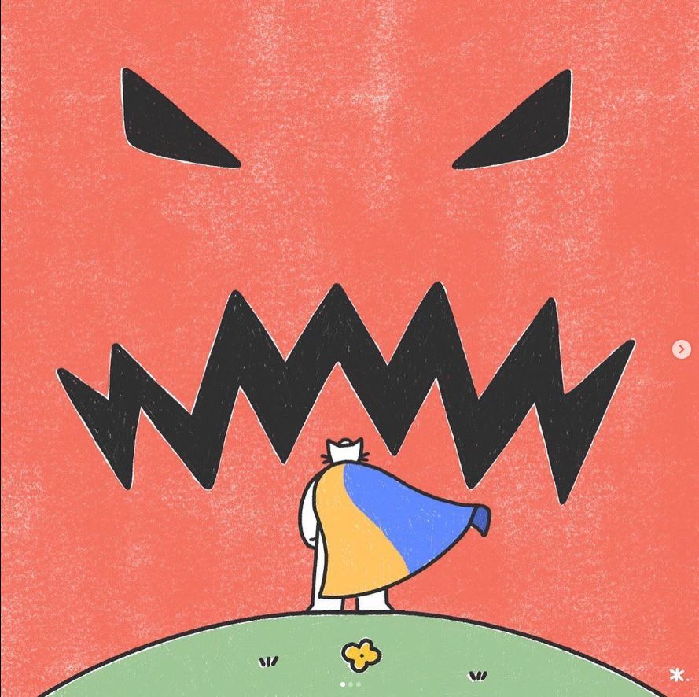
mr.zhuravchik 2022
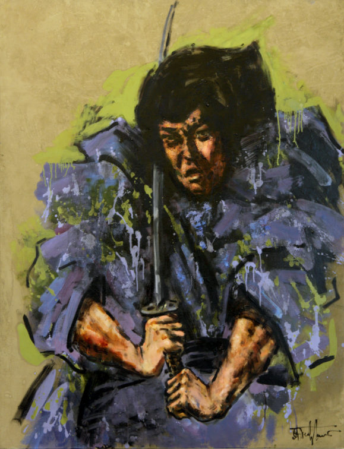
Les Podervianski 2012
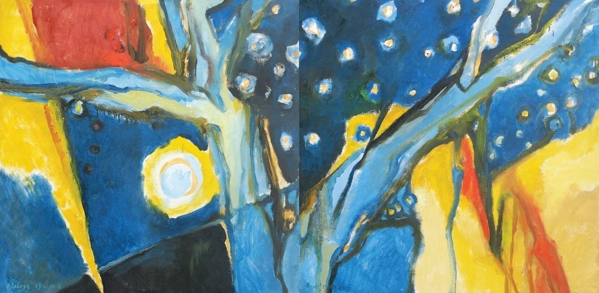
Volodymyr Loboda 2006
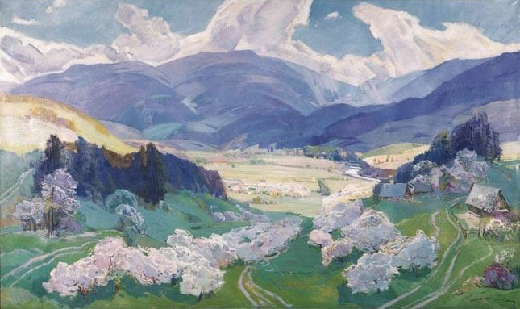
Anton Kashshai 2011